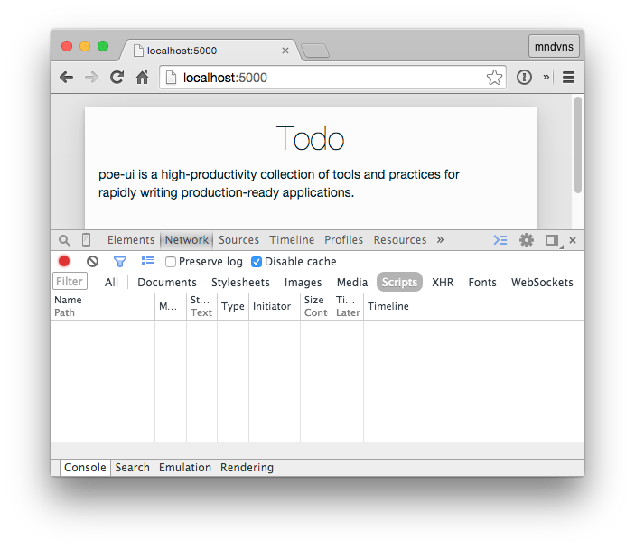

Poe is a collection of open-source tools for web developers, and Poe UI is its front-end framework.
Let's start with the basics by generating a skeleton Poe UI app locally.
Getting Started
First off, this tutorial assumes a basic familiarity with the terminal, JS/HTML/CSS, and an editor of some kind.
As new concepts are introduced, please check out the resources we provide and revisit as necessary. We will be
focussing on the very highest level features.
Now, to kick things off, we will need node.js, so install if you need to.
We'll need foreman as well, you might as well install it too while
you're at it.
If you're on OS X, it's better to install node via homebrew or
use TJ Holowaychuck's n.
An .env file controls your environment. Unlike other project files, it should not be
version controlled, as doing so may reveal sensitive information.
Your environment variables are the most fundamental values to your application, and in your Poe app it will likely
provide your api's url at the very least.
Component is a static asset tool. It's a dependency manager, distributor
as well as a general-purpose task runner. You can think of it as npm for all
things static: javascript, styles, images, fonts, etc.
To install, update, or remove components from your project, you can either
edit your project's component.json file by hand (probably simpler)
You don't have to worry about actually building the components however; when Poe UI run, it watches for changes
to your component.json and will install/remove/rebuild as necessary.
As far as structure goes, the component.json works almost identically to npm's package.json.
Component pushed the community in a much more modular direction in 2012 - 2014, but has fallen out of popularity as
npm is becoming the standard for front- and back-end JS management. In the upcoming stable version of Poe UI this file
is replaced entirely by npm.
Boilerplate
|--
Makefile
include ./node_modules/poe-ui/tasks.mk
Make is Poe's dependency tracker for builds during development
and in productions. Although it doesn't actually watch files when
they change, it determines which files rely on which, and how to
build as effectively as possible.
Since Poe app's have a consistent structure, the poe-ui module
keeps it's own mk file which is the called by your Poe app's
Makefile when you first start. So although Make has some
complex tasks under the covers, you only need one line on your
Makefile.
This file may be going away in a future release of Poe as we
keep simplifying.
/**
* Expose the application.
*/
var app = module.exports = require('poe-ui')();
This is the node.js entry point for your UI application.
It instanciaties a new poe-ui application with some high-level configuration (including
setting the API namespace to /api by default).
|--
public
Javascript
| |--
javascripts
| | |--
index.js
/**
* Module dependencies
*/
var App = require('poe-ui');
/**
* Expose the app
*/
var app = module.exports = App('PROJECT');
/**
* Load plugins here with the 'use' method:
*
* app.use(require('modal'));
*
*/
This is the entry point for the front-end builder.
This is where to handle your client-side routing. We'll get to it later;
all you need to know right now is that our index is mounted on the root.
Partials
| |--
partials
The partials directory contains Jade files which are compiled by node to HTML and delivered to the client in the form of
Angular template in the build/app.js. This leaves only a tiny footprint on the client and frees the server up from having
to manage a template runtime.
extends ../node_modules/poe-ui/views/layout
block body
header(data-ng-include, src="'/partials/header.jade'")
main(data-ng-view="")
Styles
| `--
stylesheets
| `--
index.styl
// define core styles
html
font-family sans-serif
body
body > div
height 100%
width 100%
body
position absolute
margin 0
text-align center
> div
display flex
flex-direction column
justify-content center
h1
font-weight 100
margin-top 0
a
padding 10px
View
`--
views
`--
index.jade
extends ../node_modules/poe-ui/views/layout
block body
header(data-ng-include, src="'/partials/header.jade'")
main(data-ng-view="")
This is the 'chrome' for our app, i.e., the area surrounding the app that remains
the same. The main element is where our public/partials/index.jade is loaded.
To include another partial (like a footer), simply point to the path in the src attribute
of an element as the header does here.
Note that the path is wrapped in double quotations ("'path/here'").
Now that we have a lay of the land, maybe we should edit a file.
Since this will be a UI app most of our time in this project will
be spent in the public directory.
Let's open the public/partials/header.jade file, and change
h1 my-app
to
h1 Todo
Once the file is saved, your browser should automatically update. This is true when
you edit any files in the app, with the exception of the .env file; editting the .envwill require restarting the server.
The browser should now look like this:
Styles
Poe uses Stylus to preprocess its stylesheets.
Although Stylus is the most feature-rich CSS preprocessor (compared to LESS and SASS),
vanilla CSS is still syntactically correct, so you may choose to make use of Stylus's
features or not. Up to you. In this tutorial, we will.
We'll also use the aglet framework and
the nib helper library. To install, run the following
in your application root:
npm i --save shoelace-ui-aglet nib
There we go. We can now @require these from our stylesheet.
So let's bring them in and while we're at it, add some styles. How about we frame our app
in gray against a white background?
Open public/stylesheets/index.styl and change
// define core styles
html
font-family sans-serif
body
body > div
height 100%
width 100%
body
position absolute
margin 0
text-align center
> div
display flex
flex-direction column
justify-content center
h1
font-weight 100
margin-top 0
a
padding 10px
to
// variables
input--apply-all = true
// dependencies
@require 'shoelace-ui-aglet'
@require 'nib'
// core styles
html
font-family sans-serif
font-size 14px
body
height 100%
width 100%
background rgba(black, .1)
position absolute
margin 0
body > div
background rgba(white .9)
box-shadow 0 2px 6px 0 rgba(black, 0.2), 0 5px 50px 0 rgba(black, 0.15)
box-sizing border-box
display flex
flex-direction column
max-width 500px
padding padding--extra-large
margin @padding auto
width 100%
h1
font-weight 100
margin-top 0
text-align center
a
padding-right 10px
If this is the first time you've seen the rem unit, you can read about it here.
With the @ sigil, we're making use of Stylus's property lookup
feature.
We're also using the Stylus builtin rgba to write colors.
Our Todo app should look like this now:
Routes
So we know how to edit markup and change styles. Now what? So far our app
is basically a glorified static page.
Let's add a login page to see how routing works.
First, let's write public/partials/login.jade as
form
input(type='text' placeholder='username')
input(type='password' placeholder='password')
And we'll change public/javascripts/routes.js from
The /login key is the path, and the value is the partial to which the
router should point. In this case, going to localhost:5000/login should
show us the form at the login.jade partial. Let's see:
Perfect!
But to create an actual login, we'll need to set up an API.
Take a look: we're giving back two forms: login and signup, each of which
submit a POST to our root, /. But if we submit the forms now, we wouldn't get any
response; we need to add endpoints in our API for POST /.
Let's add the following lines to our api.js:
api.post('/', function(req, res, next) {
var b = req.body;
if (b._action === 'login') return next('route');
if (!b.username || !b.password) return res.send(400);
// TODO
// save user then
// redirect to user page
});
api.post('/', function(req, res, next) {
var b = req.body;
var username = b.username;
if (!username) return res.send(400);
// TODO
// find user then
// verify credentials
// redirect to user page
});
Obviously, this still won't work. We need some way of storing our users. Let's use mongoose.js.
Mongoose
In our app's root, run
npm i --save mongoose
And make sure you have mongodb installed, then
go to a fresh terminal and run
mongod
If you're on OS X, install mongo via
brew install mongodb
Now, at the top of api.js right under var api = ... around line 14, add
var mongoose = require('mongoose');
mongoose.connect('mongodb://localhost/todo-api');
var Schema = mongoose.Schema;
var ObjectID = Schema.ObjectId;
var UserS = new Schema({
username: String,
password: String,
firstName: String,
lastName: String
});
var User = mongoose.model('User', UserS);
api.param('user', function(req, res, next, id) {
req.userBase = req.base + '/' + id;
User.findById(id, function(err, user) {
if (err) return next(err);
if (!user) return res.send(404);
res.locals.user = user;
next();
});
});
And back at our POST / endpoints, we can add the user handling like so:
api.post('/', function(req, res, next) {
var b = req.body;
if (b._action === 'login') return next('route');
if (!b.username || !b.password) return res.send(400);
var user = new User(bodyToUser(b));
user.save(function(err) {
if (err) return next(err);
res.redirect(req.base + '/' + user._id);
});
});
api.post('/', function(req, res, next) {
var b = req.body;
var username = b.username;
if (!username) return res.send(400);
User.find({username: username}, function(err, users) {
if (err) return next(err);
if (!users || !users[0]) return res.send(404);
var user = users[0];
if (user.password !== b.password) return res.send(401);
res.redirect(req.base + '/' + user._id);
});
});
So let's try it out! If you got the hyper.chrome extension,
you can actually fill and submit forms right in the browser. Let's try it.
Now let's return to our UI app, which is still running on localhost:5000.
Let's make that loging page we made earlier into the new home page. Instead of rerouting users,
we'll just default to having them login or signup. That's a pretty good practice, right?
Remember where we added our /login route? We're just going to change it right there.
In case you forgot, we're going to navigate to the public/javascript/routes.js file. We'll change
it from
Again, the key / signifies the route, and the value login signifies the partial that will
be loaded on the page.
So now if we navigate to our root at localhost:5000...
That's odd, it doesn't seem to have changed... even though we've saved the files, the server isn't
picking it up.
When you're having trouble seeing changes happen on the front-end, there are a few things you can
check for right off the bat. 9/10 times, it's one of these.
1. Build Error
If you're not seeing a change in the page, the first thing you should do is check your server. Is
is displaying normal output? It's normal to leave a character misplaced in your files, and often times
this will cause the builders to fail before they have a chance to send it to the browser. So remember:
always check your server first.
2. Cached Resources
Since we'll be working very closely with APIs, it's important to remember that your browser has some
development gotchas that you'll stumble upon now and then. Usually, it's related to caching in one
form or another.
Remember to disable your cache (unless specifically testing it). In Chrome, you can do this easily by
opening the Developer Tools and clicking Disable Cache in the Network tab.

3. Server Resart Required
Some files, like the .env file, don't initiate a restart in your app. Poe UI's file watcher also
doesn't follow symlinks, so if you're linked to an npm or component project, you won't have that
project's files watched, and you'll have to trigger the builds yourself in some other way.
And when in doubt, just restart the server and make start again.
There we are. Now, instead of hard coding the values, let's use the forms that the API's providing.
If you're not familiar with hyper+json, you should give the spec a
quick once over. We'll be referencing it often, on the front- and back-end of our applications.
To render hyper+json forms, we'll use the ng-hyper angular/hypermedia
client.
Again, if you're not familiar with ng-hyper at all, here are the docs
so you can refer to terms or concepts as we go.
Here's our ng-hyper-ized login form in login.jade:
form(data-hyper-form=".login")
div(data-ng-repeat="input in inputs")
input(data-hyper-input="input")
input.button-primary(type="submit" value="Login")
It doesn't look much different than our old form. But now we've relieved the front-end of deciding how
to connect to the server; the ng-hyper client has mounted the action and method for us, so this
form is ready to go.
Hmm, it doesn't seem to work... or does it? Well, we told it not to. User foo doesn't exist, which means a 404
is exactly the right response. We handle this at about line 100 of our api.js. Here's a refresher if you're lazy...
api.post('/', function(req, res, next) {
var b = req.body;
var username = b.username;
if (!username) return res.send(400);
User.find({username: username}, function(err, users) {
if (err) return next(err);
if (!users || !users[0]) return res.send(404);
var user = users[0];
if (user.password !== b.password) return res.send(401);
res.redirect(req.base + '/' + user._id);
});
});
Ah, that's right; our user's name is rambo. Let's try that.
Another 404, but this one is different: it tried to redirect us to another page, just like we told it to in our
api.js:
res.redirect(req.base + '/' + user._id);
So now let's head back to the front end to make out user's page.
Poegroup's focus is on all things web-related in order to provide a robust, production-ready
environment for developers that is simple and easy to learn.
Hypergroup's focus is on developing hypermedia tools, best practices, and community.
Hypergroup handles the hyper+json spec
and a number of hyper+json clients, including ng-hyper,
an angular.js client and hyper.chrome, an in-browser
JSON navigator and debugger.
Shoelace is focused on reusable design in CSS and the DOM. The
aglet framework provides a bootrap-like
framework with a bottom-up approach. Shoelace also manages tools for colors, font, and icons.